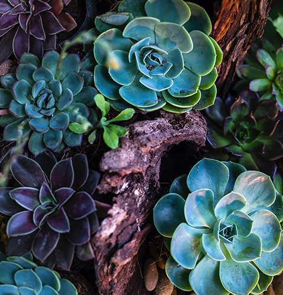

Watering
A common misconception is that succulents don’t need very much water to survive. They in fact need enough water to keep their leaves, stem and root full in order to withstand periods of drought.
The best way to water succulents and encourage healthy root growth is to completely soak the soil and allow it to dry out completely before watering again. Lightly spraying the soil will cause succulents to put off small thin roots which will easily wither and die. Soaking the soil allows them to absorb the water they need. Letting the soil dry out completely allows the succulent time to grow and put off strong healthy roots.